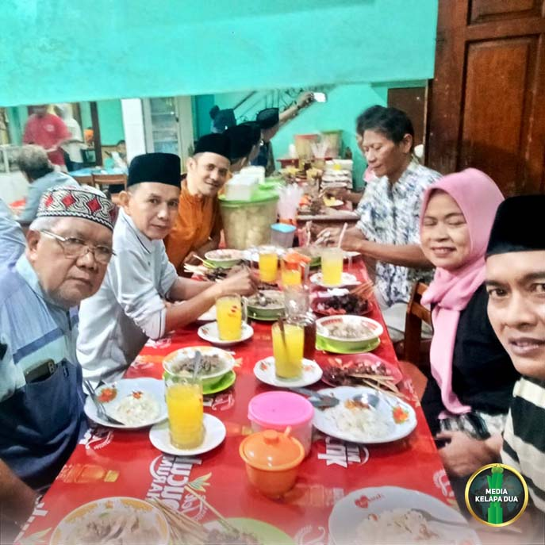
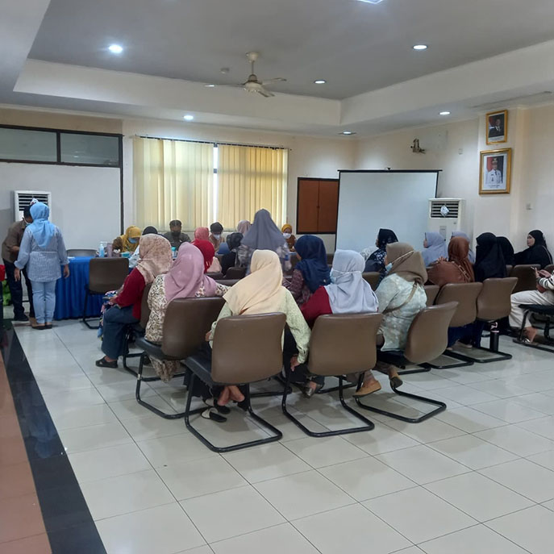

MediaKada | Pada hari Senin, 2 Maret 2026, Lembaga Musyawarah Kelurahan (LMK) Kelapa Dua menyelenggarakan kegiatan buka puasa bersama internal. Acara berlangsung di Rumah Makan Sate Sumber Rejeki, Kebon Jeruk, Jakarta Barat.
Kegiatan ini diikuti oleh seluruh anggota LMK Kelurahan Kelapa Dua, kecuali LMK RW 07 yang berhalangan hadir karena adanya agenda lain. Buka puasa bersama merupakan agenda rutin setiap bulan suci Ramadhan yang bertujuan mempererat silaturahmi serta menumbuhkan kebersamaan antar anggota LMK Kelurahan Kelapa Dua.
Ketua LMK Kelurahan Kelapa Dua, Andi Surya Salman mengharapkan kegiatan rutin di bulan suci Ramadhan ini bukan sekadar acara berbuka, tetapi juga wadah untuk memperkuat komunikasi, memperkokoh persaudaraan, serta meningkatkan semangat kebersamaan dalam menjalankan tugas dan tanggung jawab LMK. Ia berharap tradisi buka puasa bersama dapat terus dilaksanakan setiap tahun, sehingga hubungan antar anggota LMK semakin harmonis dan solid dalam mendukung pelayanan kepada masyarakat.
Selain itu, Andi Surya Salman juga menyampaikan bahwa LMK Kelapa Dua masih memiliki sejumlah agenda selama bulan suci Ramadhan. Salah satunya adalah kegiatan berbagi 1.000 takjil yang akan dilaksanakan pada 9 Maret 2026. Ia berharap seluruh anggota LMK dapat berpartisipasi aktif dalam menyukseskan kegiatan tersebut, sehingga manfaatnya dapat dirasakan langsung oleh masyarakat sekitar.
Acara dimulai pukul 17.00 WIB dengan suasana ramah tamah antar anggota dilanjutkan dengan buka puasa bersama, kegiatan berakhir pada pukul 19.00 WIB.
Rangkaian acara buka puasa internal berjalan lancar, LMK Kelapa Dua menegaskan komitmennya untuk menjaga solidaritas internal sekaligus memperkuat peran sosial dalam melayani masyarakat.
(LMK-08 Kelapa dua)

Sosialisasi Teknologi Wolbachia Pengendalian DBD di RW 08 Kelapa Dua